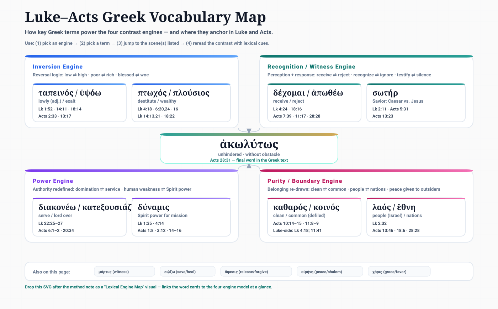

Luke's contrast logic is encoded at the word level. These Greek terms don't just name ideas —
they carry the weight of reversal in their semantic range, their placement,
and their repetition across both volumes.
How to use this page: Each entry shows the word's semantic range, the specific
contrast pair it drives, key occurrences, and its theological weight. Read alongside the
Contrast Atlas.
How Greek Encodes Luke's Reversals
Luke's contrast architecture is not just narrative structure — it is built into the vocabulary.
Three mechanisms are at work: antonymic pairing (where two words are placed as
direct opposites in parallel scenes), semantic extension (where a single word
carries both the "expected" and "surprising" meaning), and repetition across volumes
(where a term first introduced in Luke resurfaces in Acts at the moment its meaning is fulfilled
or inverted). The words below are organized by which of Luke's four contrast engines they primarily
power.
Visual Overview
Lexical Engine Map
Key terms mapped to their four engines — use as a quick reference before diving into the word cards below.

🔄
Inversion Engine
The vocabulary of lifting and lowering — Luke's Magnificat logic made lexical
ταπεινόω / ὑψόω
tapeinoō / hypsoō
humble / exalt
This antonymic pair is the Magnificat's spine. The Magnificat itself uses the
adjectiveταπεινούς (the lowly ones, Lk 1:52) paired with the
verbὕψωσεν (he exalted) — Luke then repeats the same reversal
pattern using the verbal form tapeinoō in Jesus' teaching (Lk 14:11; 18:14).
Hypsoō means to lift up, elevate, glorify.
The surprise in every contrast pair is which direction the word will travel.
ταπεινόω
Pharisee exalts himself (Lk 18:14) · Rich sent away empty · Proud scattered
Theological weight: The parable of the Pharisee and Tax Collector
(Lk 18:9–14) uses both verbs in the same sentence — one of the most compressed
expressions of Luke's entire theology. Acts 2:33 applies hypsoō to the risen
Jesus himself, revealing that the pattern operates cosmically, not just socially.
πτωχός / πλούσιος
ptōchos / plousios
poor / rich
Ptōchos is not merely poor but destitute — the person who crouches
or cowers, entirely dependent. Luke uses this specific word rather than penēs
(working poor) to signal total vulnerability. The contrast with plousios (the
wealthy one who is abundantly supplied) creates an inversion whose resolution is
structurally guaranteed by the Magnificat.
πτωχός
Good news to the poor (Lk 4:18) · Blessed are the poor (Lk 6:20) · Lazarus (Lk 16)
⇄
πλούσιος
Rich sent away empty (Lk 1:53) · Woe to the rich (Lk 6:24) · Rich man (Lk 16)
Key occurrences
Luke 4:18Luke 6:20, 24Luke 14:13, 21Luke 16:19–22Luke 18:22Luke 21:1
Theological weight: Luke's beatitudes (Lk 6:20–26) are unique in using
ptōchos without qualification — where Matthew has "poor in spirit," Luke has
simply "poor." The pair structures the entire Magnificat-to-Lazarus arc: same two words,
same reversal, different scenes.
μακάριος / οὐαί
makarios / ouai
blessed / woe
Makarios pronounces the deep happiness of those in alignment with God's
coming order. Ouai is an untranslatable lament-cry — grief over someone on
the wrong side of the coming reversal. Luke uniquely structures the beatitudes as a
fourfold blessed / fourfold woe antiphon (Lk 6:20–26), making the contrast
explicit and structural rather than implied.
μακάριος
Poor · Hungry · Weeping · Hated — in the kingdom's logic, these are the ones who flourish
⇄
οὐαί
Rich · Full · Laughing · Praised — in the kingdom's logic, these face the reversal
Key occurrences
Luke 6:20–26Luke 10:23Luke 11:27–28Luke 23:29Acts 26:2
Theological weight: The fourfold structure of blessings and woes in
Luke 6 is a formal intensification of the Magnificat's four reversals. Luke is not
just teaching ethics — he is announcing which direction history is moving and inviting
the reader to position themselves accordingly.
ἄφεσις
aphesis
release · forgiveness · liberty
Aphesis carries a remarkable breadth: it can mean debt cancellation,
release from prison, pardon of sins, and Jubilee liberation — all simultaneously.
Luke introduces it in Jesus' programmatic announcement (Lk 4:18) quoting Isaiah 61,
and then deploys it throughout the narrative as the specific thing that surprises
insiders: the wrong people receive it, and too easily.
expected recipients
The righteous · Those who have earned it · The ceremonially clean
⇄
actual recipients
The sinful woman (Lk 7) · Zacchaeus (Lk 19) · Gentiles (Acts 13:38)
Key occurrences
Luke 4:18Luke 24:47Acts 2:38Acts 5:31Acts 10:43Acts 13:38Acts 26:18
Theological weight:Aphesis is the word that links Jesus'
Nazareth sermon to Pentecost to the ends of the earth. Its Jubilee resonance means
every instance of forgiveness in Luke–Acts is also a release from captivity — the
two meanings are inseparable for Luke.
👁️
Recognition Engine
The vocabulary of seeing and hearing — who perceives what God is doing
δέχομαι / ἀπωθέω
dechomai / apōtheō
receive / reject · push away
Dechomai is Luke's most important response verb — to receive, welcome,
accept with open hands. It appears at every major threshold crossing: Jesus received
in Nazareth (then rejected), the Samaritans receiving Philip, Lydia's heart opened
to receive Paul's words. Apōtheō is its violent counterpart: to push away,
reject with force. Together they structure the entire witness pattern.
δέχομαι — those who receive
Samaritans · Ethiopian eunuch · Lydia · Cornelius · Bereans
⇄
ἀπωθέω — those who reject
Nazareth synagogue · Jerusalem leadership · Thessalonica mob · Sanhedrin
Key occurrences
Luke 4:24Acts 7:39Acts 7:27Acts 8:14Acts 16:14–15Acts 28:28
Theological weight: Stephen's speech (Acts 7) uses apōtheō
to describe Israel's ancestors rejecting Moses — and the Council immediately repeats
the pattern by rejecting Stephen. Luke's point is that the rejection of Jesus is not
new; it is a repeated pattern in Israel's story, now arriving at its crisis point.
σῴζω
sōzō
save · heal · deliver · make whole
Sōzō is Luke's most flexible contrast term because it works on multiple
registers simultaneously: physical healing, social restoration, spiritual salvation.
The irony is structural — those who are told "your faith has saved you" are consistently
outsiders (the sinful woman, the Samaritan leper, Zacchaeus), while those who expect
to be saved by their status find that it offers no such guarantee.
assumed safe (unsurprised)
The Pharisees · The rich ruler · Felix who delays · Agrippa "almost"
Key occurrences
Luke 7:50Luke 13:23Luke 17:19Luke 19:9–10Acts 2:21Acts 16:30–31Acts 27:20, 31
Theological weight: The shipwreck narrative (Acts 27) uses sōzō
repeatedly for physical survival — and thereby echoes every earlier "saved" declaration.
Luke's point: the one who saves the jailer, the leper, and the sinful woman is the same
one who keeps Paul alive on the sea.
ἐπιγινώσκω / ἀγνοέω
epiginōskō / agnoeō
recognize / fail to know
Epiginōskō is full recognition — not just intellectual knowledge but
responsive, relational knowing. Agnoeō is its absence — acting out of
ignorance or failing to perceive what is before you. The contrast is most concentrated
in the Emmaus narrative: the disciples walk with Jesus and do not recognize
him, until the breaking of bread opens their eyes.
ἐπιγινώσκω — those who recognize
Emmaus disciples (Lk 24:31) · Simeon (Lk 2:26) · Demons (Lk 4:34) · Cornelius household
⇄
ἀγνοέω — those who fail to recognize
Jerusalem leaders (Acts 3:17; 13:27) · Athenians (Acts 17:23) · Emmaus (Lk 24:16)
Key occurrences
Luke 24:16, 31Acts 3:17Acts 13:27Acts 17:23Acts 28:27
Theological weight: Acts 13:27 is the most devastating usage: the
Jerusalem leaders "did not recognize" Jesus or the voices of the prophets they read
every Sabbath — and in condemning him they fulfilled those very prophecies.
Agnoeō is not excused by Luke; it is the central indictment.
σωτήρ
sōtēr
savior · deliverer · rescuer
Sōtēr was one of the highest honorifics in the Roman world — applied to
emperors, generals, and gods who delivered cities from destruction. Luke deploys it
as a direct political counter: the child born in Bethlehem is announced as
sōtēr (Lk 2:11), not Caesar. Acts then applies it explicitly to the risen
Jesus (Acts 5:31; 13:23), claiming the title Rome reserved for its rulers belongs to
the one Rome executed.
expected σωτήρ
Caesar Augustus — whose birth announcements used the same title · Roman power as the source of peace and security
⇄
actual σωτήρ
Jesus (Lk 2:11) — born in a feeding trough, announced to shepherds · Exalted after death (Acts 5:31; 13:23)
Key occurrences
Luke 2:11Acts 5:31Acts 13:23
Theological weight: Luke 2:11 announces the sōtēr
to shepherds — the lowest-status night workers, not the court. The recognition
engine operates here at its sharpest: those with no cultural claim to receive
imperial good news are the first to hear it. Acts 5:31 clinches the counter-claim:
"God exalted him to his right hand as Leader and Savior" — the language
of Roman triumph applied to a crucified Jew.
μάρτυς / μαρτυρέω
martys / martyreō
witness / to bear witness
Martys is the person who testifies from personal experience. Acts is
structured by this word: Acts 1:8 commissions witnesses; the rest of Acts shows
what witnessing costs. The contrast Luke builds is between those who bear
witness at personal risk and those who demand silence from precisely
the same people — Sanhedrin telling Peter "speak no more," Paul's chains alongside
his "unhindered" speech.
bearing witness
Peter at Pentecost · Stephen before the Council · Paul before Felix, Festus, Agrippa · "To the ends of the earth"
⇄
silencing the witness
"Speak no more" (Acts 4:18) · Stephen stoned · Paul arrested, imprisoned, tried
Theological weight: Every silencing attempt in Acts fails — and the
irony deepens with each trial. By Acts 28, Paul's chains become the stage on which
he bears the most sustained witness in the book. The word martys will
eventually evolve into "martyr" in English — a trajectory Acts itself anticipates
in Stephen.
⚡
Power Engine
The vocabulary of authority and service — who exercises power, and how
διακονέω / κατεξουσιάζω
diakoneō / katexousiazō
serve / lord it over
Diakoneō means to serve at table, to minister, to wait on — the posture
of a servant. Katexousiazō means to exercise authority over, to dominate,
to lord it over. Luke places both words in Jesus' mouth at the Last Supper (Lk 22:25–26),
turning the disciples' dispute about greatness into a vocabulary lesson: the kingdoms
of this world run on katexousiazō; the kingdom of God runs on diakoneō.
κατεξουσιάζω — domination
Gentile rulers · Herod (Acts 12) · Simon Magus (buying power) · Felix holding Paul for money
⇄
διακονέω — service
Jesus ("I am among you as one who serves") · Deacons (Acts 6) · Paul weeping with elders
Key occurrences
Luke 22:25–27Luke 4:39Acts 6:1–2Acts 19:22Acts 20:34
Theological weight: Luke 22:25–27 is the most compressed statement
of Luke's power theology. The very moment the disciples argue about greatness, Jesus
names their framework (katexousiazō) and replaces it (diakoneō).
Acts shows what this looks like institutionally: the church's first structural
decision is to appoint table-servers (Acts 6).
δύναμις / ἀσθένεια
dynamis / astheneia
power / weakness
Dynamis in Luke–Acts is almost always Spirit power — the power that heals,
witnesses, and extends the kingdom. Luke narrates the advance of this Spirit power
consistently through moments of human weakness and vulnerability. Note:
astheneia as a noun is more native to Paul's letters than to Luke's vocabulary;
Luke typically narrates weakness rather than naming it — stonings, beatings,
shipwreck — while dynamis advances through and despite each episode.
human weakness (ἀσθένεια)
Paul beaten · Paul shipwrecked · Paul in chains · "I came to you in weakness" (1 Cor echo)
⇄
Spirit power (δύναμις)
Mission never stops · Prison opened · Jailer converted · Word unhindered
Key occurrences
Luke 1:35Luke 4:14Acts 1:8Acts 3:12Acts 14:19–20Acts 28:8
Theological weight: Acts 1:8 — "you will receive dynamis
when the Holy Spirit comes upon you" — is the structural promise that Acts then
demonstrates. Significantly, the demonstrations come most clearly at the moments of
greatest human weakness: the prison earthquake (Acts 16), the Maltese serpent (Acts 28),
the voyage's survival (Acts 27).
χάρις
charis
grace · favor · gift unearned
Charis is the word that dismantles the expectation of deserving.
In Luke's infancy narrative it is used for Mary finding "favor" with God —
not because of her status but as sheer gift. In Acts it describes what the
community experiences and what spreads to the Gentiles. The contrast it drives
is between the logic of merit (those who deserve recognition) and the logic of
grace (those who receive what they cannot earn).
merit logic (no charis needed)
Zechariah's priestly credentials · Pharisee's record · Rich ruler's obedience
⇄
grace logic (charis received)
Mary (Lk 1:30) · Jerusalem church (Acts 4:33) · Antioch Gentiles (Acts 11:23)
Key occurrences
Luke 1:30Luke 2:40, 52Acts 4:33Acts 11:23Acts 14:26Acts 20:24
Theological weight:Charis is deliberately introduced
in the annunciation to Mary before any mention of her character — she is told she
has found favor before she says anything. This sequencing programs the reader:
in Luke's world, recognition of charis comes before human action,
not in response to it.
🌿
Purity Engine
The vocabulary of clean and unclean — how Luke redraws the boundary of belonging
καθαρός / κοινός
katharos / koinos
clean / common · defiled
Katharos means ritually and morally clean — acceptable, unpolluted.
Koinos means common or defiled — the word Peter uses when the vision
shows him animals and he protests "never, Lord." The contrast structures Acts 10–11:
God declares katharos what Peter's purity reflex marks as koinos.
The argument is not just about food — it is about who belongs to the people of God.
κοινός — Peter's reflex
"Nothing common or unclean has ever entered my mouth" (Acts 10:14) — purity boundary maintained
⇄
καθαρός — God's declaration
"What God has made clean, do not call common" (Acts 10:15) — boundary redefined
Key occurrences
Luke 4:33Luke 11:41Acts 10:14–15Acts 11:8–9Acts 20:26
Theological weight: The three-fold repetition of the vision (Acts 10:16)
deliberately mirrors Peter's three-fold denial (Lk 22:61). Just as the rooster crow
recalled Peter to himself, the three-fold vision breaks a different reflex.
Luke connects purity reform to Peter's own story of restoration.
λαός / ἔθνη
laos / ethnē
people (Israel) / nations (Gentiles)
Laos in Luke–Acts nearly always refers to the covenant people — Israel.
Ethnē refers to the nations, Gentiles. The contrast Luke builds is progressive:
the laos who should receive the good news repeatedly rejects it, while the
ethnē who were outside the covenant increasingly receive it. By Acts 28,
Paul formally announces the turn to the ethnē — and they will listen.
λαός — the covenant people
Nazareth rejects (Lk 4) · Jerusalem rejects · Synagogues expel Paul · "You will not listen"
⇄
ἔθνη — the nations
Cornelius receives (Acts 10) · Antioch flourishes · "The Gentiles will listen" (Acts 28:28)
Key occurrences
Luke 2:32Acts 13:46Acts 18:6Acts 28:28Acts 15:14
Theological weight: Simeon's song (Lk 2:32) introduces both words
together: a light for the ethnē and glory for laos Israel.
Luke has programmed the reader from the beginning: this story is for both. The
tragic irony is that the laos for whom it was especially prepared
is the last to receive it.
εἰρήνη
eirēnē
peace · wholeness · shalom
Eirēnē carries the full weight of Hebrew shalom — not simply
absence of conflict but wholeness, restored relationship, communal flourishing.
Luke uses it as a greeting given to surprising recipients: the sinful woman
("go in peace"), the crowds as Jesus enters Jerusalem. The contrast is between
those who expected peace as their inheritance (Israel's insiders) and those
who receive it as pure gift (outsiders, sinners, Gentiles).
peace expected (not received)
Jerusalem does not recognize "the things that make for peace" (Lk 19:42) · Leaders find no peace
⇄
peace given (to the unexpected)
Sinful woman (Lk 7:50) · Samaritans (Acts 10:36) · Cornelius household (Acts 10:36)
Key occurrences
Luke 2:14Luke 7:50Luke 8:48Luke 19:42Acts 10:36Acts 15:33
Theological weight: Luke 19:42 is one of the most tragic uses in
either volume: Jesus weeps over Jerusalem because she "did not know the time of
[her] visitation" and did not recognize "the things that make for peace." The city
of peace (Yerushalayim) has missed its peace — and it will be given
to Samaritans, Gentiles, and sinners instead.
Structural Wordplay Across Both Volumes
These terms operate as load-bearing elements across both volumes — introduced in Luke,
fulfilled or inverted in Acts. Reading them as a pair reveals Luke's two-volume architecture.
Closed eyes ⇄ recognition — table is where seeing happens
δεσμός / λόγος desmos / logos — chains / word
Release language introduced at Lk 4:18 (ἄφεσις — liberty to captives); angel frees prisoners in Acts 5:19; 12:7
Paul in chains; word proclaimed ἀκωλύτως (Acts 28:31) — final contrast
Bound messenger ⇄ unbound word (the book's final and defining contrast)
⛓️
The Capstone Word
Acts 28:31 — the final word of Luke's two-volume work
ἀκωλύτως
akōlytōs
unhindered · without obstacle · freely
The very last word of Acts. An adverb that Luke has prepared the reader for across
28 chapters. Every attempt to hinder the word — Zechariah's silence, Nazareth's rejection,
the Sanhedrin's threats, Herod's execution of James, Paul's chains —
has failed to achieve its purpose. The messenger is imprisoned;
the word goes out ἀκωλύτως.
Acts 28:31 — the last word in the Greek text
κωλύω vs. ἀκωλύτως
kōlyō / akōlytōs
to hinder / unhindered
Kōlyō means to hinder, stop, forbid, prevent. Its alpha-privative
form akōlytōs negates it absolutely. Luke uses kōlyō
at three crucial boundary-crossing moments before the final negation:
The kōlyō sequence
"Can anyone hinder (kōlysai) the water for baptizing?" — Cornelius (Acts 10:47)"Do not hinder (kōlyete) them" — children (Luke 18:16)"Who was I that I could hinder (kōlysai) God?" — Peter defending Cornelius (Acts 11:17)
The structure: Each kōlyō occurrence asks the same question —
can the boundary hold? Each time, the answer is no. The final
akōlytōs is Luke's grammatical summary of the entire narrative:
nothing has been able to hinder it, nothing will.
Zechariah ⇄ ἀκωλύτως
The arc from first to last
Luke 1:20 → Acts 28:31
Luke's two-volume work opens with a priestly voice silenced for unbelief
(Lk 1:20 — Zechariah siōpaō, struck mute) and closes with
an apostolic voice speaking freely despite chains — ἀκωλύτως.
The contrast is not accidental: it is the structural frame of the entire
narrative.
Luke 1:20 — opening
Zechariah: priestly insider, credentials intact, voice silenced for unbelief. God's word paused at the institution.
⇄
Acts 28:31 — closing
Paul: Roman prisoner, chains intact, voice unhindered. God's word advancing through the outsider.
The reversal: What was silenced at the beginning of volume one is
declared unsilenceable at the end of volume two. The word outlasts every attempt
to contain it — and the final scene of Acts is not a verdict but an open door.
Greek Term → Contrast Pair Index
Quick reference: which Greek term powers which contrast pair in the atlas.
Greek Term
Primary Contrast Pair(s)
Atlas Node
ταπεινόω / ὑψόω
Pharisee ⇄ Tax Collector · Magnificat · Last Supper dispute
Sinful Woman · Jerusalem's missed peace · Cornelius household
Mercy · Purity Engine
κωλύω / ἀκωλύτως
Chains ⇄ Unhindered Word · Cornelius · Children welcomed
Power Engine (capstone)
📚
Bibliography & Sources
Greek lexical and linguistic references for this study
Primary Text
Nestle-Aland.Novum Testamentum Graece. 28th ed. Stuttgart: Deutsche Bibelgesellschaft, 2012.
All SectionsGreek text and textual apparatus for all Luke–Acts passages
Greek Lexicons
Bauer, Walter, Frederick W. Danker, W. F. Arndt, and F. W. Gingrich.A Greek-English Lexicon of the New Testament and Other Early Christian Literature. 3rd ed. Chicago: University of Chicago Press, 2000. [BDAG]
All Word StudiesSemantic range, usage data, and context-specific meanings for all entries on this page
Louw, Johannes P. and Eugene A. Nida.Greek-English Lexicon of the New Testament Based on Semantic Domains. 2nd ed. New York: United Bible Societies, 1989.
Semantic RangeDomain-based analysis for contrast vocabulary clusters (ταπεινόω/ὑψόω, λαός/ἔθνη)
Kittel, Gerhard, and Gerhard Friedrich, eds.Theological Dictionary of the New Testament. 10 vols. Grand Rapids: Eerdmans, 1964–1976. [TDNT]
Theological WeightBackground articles on ἄφεσις, εἰρήνη, σῴζω, χάρις, μάρτυς
Luke–Acts Commentaries (Greek-level)
Bock, Darrell L.Luke. 2 vols. Baker Exegetical Commentary on the New Testament. Grand Rapids: Baker Academic, 1994–1996.
ExegesisDetailed Greek analysis; primary source for ταπεινόω/ὑψόω at Lk 1:52 and 18:14
Bock, Darrell L.Acts. Baker Exegetical Commentary on the New Testament. Grand Rapids: Baker Academic, 2007.
ExegesisActs 28:31 ἀκωλύτως analysis; κωλύω sequence in Acts 10–11
Fitzmyer, Joseph A.The Gospel According to Luke. 2 vols. Anchor Bible. New York: Doubleday, 1981–1985.
Greek AnalysisMagnificat vocabulary analysis (Lk 1:46–55); πτωχός/πλούσιος semantic range
Johnson, Luke Timothy.The Acts of the Apostles. Sacra Pagina. Collegeville: Liturgical Press, 1992.
Acts Greekδέχομαι/ἀπωθέω reception pattern; μάρτυς usage across Acts
Linguistic & Literary Studies
Tannehill, Robert C.The Narrative Unity of Luke–Acts. 2 vols. Minneapolis: Fortress, 1986–1990.
Green, Joel B.The Theology of the Gospel of Luke. Cambridge: Cambridge University Press, 1995.
Theological WeightInversion vocabulary in context of Luke's social theology; ἄφεσις as Jubilee
Rowe, C. Kavin.Early Narrative Christology: The Lord in the Gospel of Luke. Grand Rapids: Baker Academic, 2009.
Recognition Languageἐπιγινώσκω and Christological recognition patterns in Luke
Note on Sources: This page focuses on Greek vocabulary as a window into Luke's contrast architecture. The word studies are not exhaustive lexical surveys but targeted semantic analyses oriented toward how Luke uses each term to construct his juxtaposition pairs.
Citation Format: Chicago Manual of Style, 17th edition